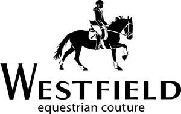

Trade Mark Journal No.2025/024 13 June 2025
UK00004178905 25 March 2025 (18,25,28)

- Class 18
- Leather and imitation leather, pelts and hides; animal hides; animal skins; bags; whips, harnesses and saddlery; clothing for animals; clothing for horses; equestrian accessories namely bits, bit covers, blankets, blinkers, boots, bridles, cloths, clothing, coats, collars, covers, crops, girths, halters, halter covers, harnesses, headcollars, headgear, halters, harnesses, headbands, hoofguards, hoods; equestrian accessories namely bits, knee-pads, leads, leashes, leggings, leg-wraps, martingale, masks, muzzles, nose bands, numnahs, pads, reins, ropes, rugs, saddlery, saddles, saddle bags, saddle belts, saddle cloths, saddle covers, saddle pads, saddle protectors, saddle trees, socks, sheets, spurs, stirrups, straps, tack, valances, whips.
- Class 25
- Clothing, footwear and headgear; clothing; footwear; headgear; clothing for horse riding; footwear for horse riding; boots for horse riding.
- Class 28
- Toys; stuffed toys; plush stuffed toys; stuffed toys animal; stuffed toys in the form of ponies; stuffed toys in the form of dogs; stuffed toys in the form of animals; accessories for stuffed toy animals; soft toys; soft toys in the form of ponies; soft toys in the form of dogs; stuffed toys in the form of animals; accessories for stuffed toys in the form of animals. .
MF Brand Holdings Ltd